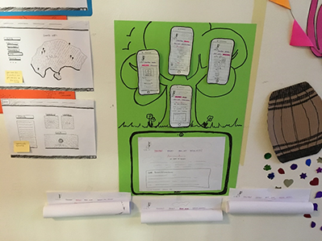

PROTOTYPES
USABILITY TEST
- What site is this?
- What page am I on?
- What are the main sections?
- What navigation options do we have?
- Where am I in the scheme of things?
- What did you like about the website?
All of my respondents answered very similar to each other. They find the page well organized, structured and interesting with different colours, backround picture, they found the website very smooth and matching. Some respondents suggested different font for text and also adding some animation.
MOODBOARD
LOGO
TYPOGRAPHY
BAUHAUS typeface family is a small collection of sans serif fonts of geometrical design with monotone strokes in each of its five weights. Very distinctive in appearance, it’s often found in applications where form is at least as important as function.
✓ Informational site, about Bauhaus, with the description of what is it, and all the little facts about the shapes of this art. Historical point of view also.
✓ It is very clearly displayed. I like the white backround behind navigation, makes it clear and readable.
✓ Homepage, about website, about the designer of website and about the design from inside point of view.
✓ It is a menu, is differented with colour so it is very simple to recognise.
✓ It is little bit confusing the Bauhaus and the behind design pages at the start but after you read them you understand why they are separated.
✓ The website is clear and organized. I'd maybe change the type of letter (writing type) but the size is good.
✓ Description of website owner,logo,motto.
I will try different fonts for writing to see if any other font family suits better.
I will add some animation or videos , maybe some newspaper articles to make the site
even more interesting and up to date. I will also work on perfecting sizing of pictures, and border widths.
Other than that I am satisfied with responds and I will keep the structure of the website the same.